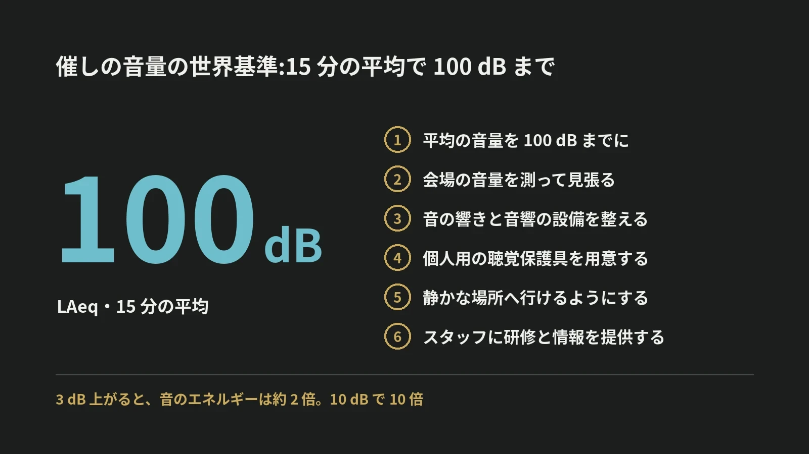

LOTUS VISUAL JOURNAL / 現場の裏側 #28
催しの音量には、
世界の基準がある。
「15 分の平均で 100 デシベル」
結論から。世界保健機関(WHO)は 2022 年、音楽の会場や催しのための基準を公表しました。音量の上限は、15 分間の平均で 100 デシベル。
上限だけでなく、測ること、耳を休める場所を用意することまでが、ひと組になっています。
01 / THE LINE15 分の平均で、100 デシベル
世界保健機関(WHO)は 2022 年 3 月 2 日、音楽の会場や催しのための基準「WHO global standard for safe listening venues and events」を公表しました。WHO は、世界で 10 億人を超える若い人が、聴力を失うおそれにさらされていると見積もっています。
基準の 1 つめが、音量の上限です。平均の音量を、100 dB(LAeq、15 分)までにする。LAeq は、人の耳の感じ方に合わせた補正(A 特性)をかけて、時間で平均した音の大きさです。
02 / SIX FEATURES上限のほかに、5 つ
WHO の説明によると、基準は 6 つの項目でできています。
1 つめ、平均の音量を 100 dB(LAeq、15 分)までにする。2 つめ、会場の音量を測って見張る。3 つめ、会場の音の響きと、音響の設備を整える。4 つめ、個人用の聴覚保護具を用意する。5 つめ、静かな場所へ行けるようにする。6 つめ、現場のスタッフに研修と情報を提供する。
上限を守るには、測らなければなりません。測るには、担当と手順が要ります。6 つは、ばらばらの項目ではなく、ひと組です。
03 / DECIBELSデシベルは、足し算で考えない
デシベルは、音のエネルギーの比を対数で表す単位です。3 dB 上がると、エネルギーはおよそ 2 倍。10 dB 上がると、10 倍になります。
100 dB と 103 dB は、数字では 3% の違いに見えます。けれども、耳に届く音のエネルギーは 2 倍違います。
音のエネルギーの合計で比べると、103 dB で 7 分半は、100 dB で 15 分と同じ量になります。数字が少し上がるだけで、同じ量に届くまでの時間は半分になります。
04 / AT WORK働く側には、85 デシベルの線
会場には、来場者のほかに、そこで働く人の耳もあります。厚生労働省の「騒音障害防止のためのガイドライン」(1992 年に策定、2023 年 4 月に改訂)は、等価騒音レベルごとに、取るべき措置を 3 つに分けています。
85 dB 未満なら、その環境を保つよう努める。85 dB 以上 90 dB 未満なら、必要に応じて聴覚保護具を使わせる。90 dB 以上なら、その場所を標識で示し、聴覚保護具を使うよう掲示し、85 dB 未満になるよう努める。
100 dB の線は、来場者のための上限。85 dB の線は、長い時間そこで働く人のためのものです。
05 / ON SITELOTUS VISUAL へのご相談では
LOTUS VISUAL へのご相談では
音量を決めるのは、主催の方と音響の担当の方です。映像の側にできることを、ご相談の中でお伝えします。
測っている音量の値を、操作席の画面に出しておくこと。静かな場所や、耳栓を配る場所を、会場の画面で案内すること。大きな音の中で長く働くスタッフの、耳の守り方を先に決めておくこと。
06 / TAKEAWAY今日の持ち帰り
今日の持ち帰り
- WHO の基準は、15 分の平均で 100 dB まで。一瞬の最大ではなく、平均で見る。
- 上限だけでなく、6 つひと組。測る、設備を整える、聴覚保護具、静かな場所、スタッフの研修。
- 3 dB で、エネルギーは約 2 倍。働く側には、85 dB の線がある。
出典:世界保健機関(WHO)「WHO global standard for safe listening venues and events」(2022 年 3 月 2 日公表。音量の上限)、WHO の解説記事(2024 年 10 月 8 日。6 つの項目)、厚生労働省 職場のあんぜんサイト「騒音障害防止のためのガイドライン」の説明(85 dB・90 dB の区分と措置。平成 4 年 10 月 1 日策定、令和 5 年 4 月 20 日改訂)。エネルギーの倍率と時間は、デシベルの定義から計算した値です。